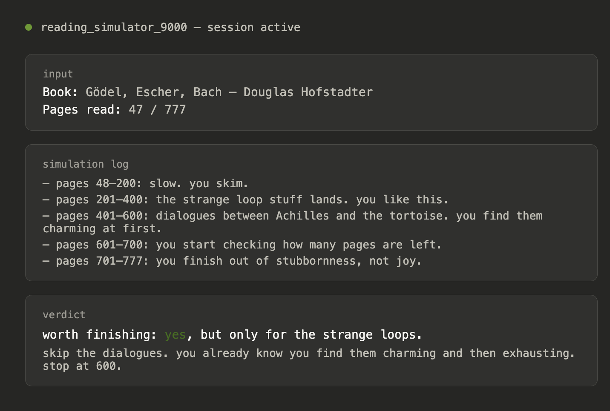

Reading Simulator 9000
As I mentioned before, I've been reading more. Highly recommended books. But… sometimes, you just don’t know if you wanna finish, you know? They just don’t grip you. Should you continue? It’s hard to say. And opportunity costs are a thing.
That’s why I invented the ‘Reading Simulator 9000’! It spins of a computer simulation of you, with your exact tastes, and reads the book to the end. By the end they tell you if they think it is worth it.
This isn't just a recommendation machine. It's certainty. A way to never feel guilty about quitting a book again.

I’ve been using AI for this too. I give him a bunch of my tastes
Ideally, in the future, I’d have it spin up a simulation of me.
Recommendation machine
Hard to know if should keep reading
Ai knowing your tastes will know
And can read to the end for you and let you know so you dont have to
Spin a simulation lol
+
Wonder if some of these best told through fiction…